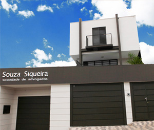

Missão
Proporcionar suporte jurídico eficaz, buscando sempre soluções inteligentes e econômicas às necessidades apresentadas por nossos clientes.
Advogando desde 1996 em Bragança Paulista, a Souza Siqueira Sociedade de Advogados alia profundidade doutrinária, eficiência administrativa e proximidade no atendimento em todo o Estado de São Paulo e principais capitais brasileiras.
A Souza Siqueira Sociedade de Advogados, visando ser referência em profissionalismo e eficiência na prestação de serviços jurídicos, conta com ampla experiência e conhecimento nas diversas especialidades do Direito. Com sede na cidade de Bragança Paulista, possui atuação consolidada em todo o Estado de São Paulo e nas principais capitais do país.
Nosso compromisso é prestar um serviço jurídico de qualidade, aliando atualização legislativa contínua e gestão eficiente de custos para propiciar aos clientes — empresariais ou pessoas físicas — a tranquilidade necessária ao tratar de assuntos jurídicos estratégicos.
Estrutura desenhada para acolher clientes com conforto, discrição e agilidade técnica no coração de Bragança Paulista.


Proporcionar suporte jurídico eficaz, buscando sempre soluções inteligentes e econômicas às necessidades apresentadas por nossos clientes.
Com o intuito de buscar a constante melhoria de seus serviços, prioriza um relacionamento direto e pessoal com seus clientes, tratando cada caso de forma personalizada.
Início das atividades com foco em advocacia consultiva e contenciosa de alta proximidade com empresários, famílias e instituições locais.
Formação de pós-graduação, mestrado e doutorado na USF, PUC e Universidade Presbiteriana Mackenzie, aliada à docência e publicações técnicas.
Participação ativa junto a comissões da OAB-SP, coautoria em obras jurídicas da ESA/OAB-SP e interlocução com grupos empresariais e multinacionais.
Atendimento no Condomínio Edifício New York Trade Center, conectando tradição jurídica às frentes Digital, Desportiva, Ambiental e Tributária.